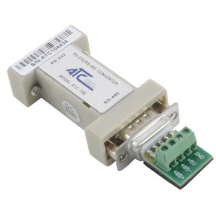
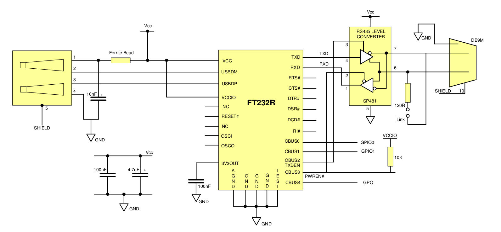

Setting up hardware¶
Connecting to modbus rtu slaves¶
with a RS232 to RS485 converter¶
This way you can connect the modbus slave with the ARM board directly to its RS232 port or together with a USB to RS232 adapter with USB.

with a USB to RS485 converter¶
To provide a USB to RS485 converter in one module you can use a ready to use board like this one: https://www.sparkfun.com/products/9822
Or you can use a USB to serial chip and a RS485 tranceiver chip.
For example with a FT232RL IC and an SP485 IC as seen in the FT232RL datasheet:
